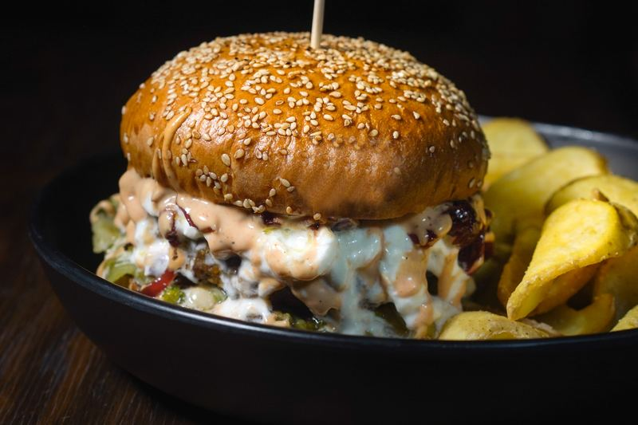
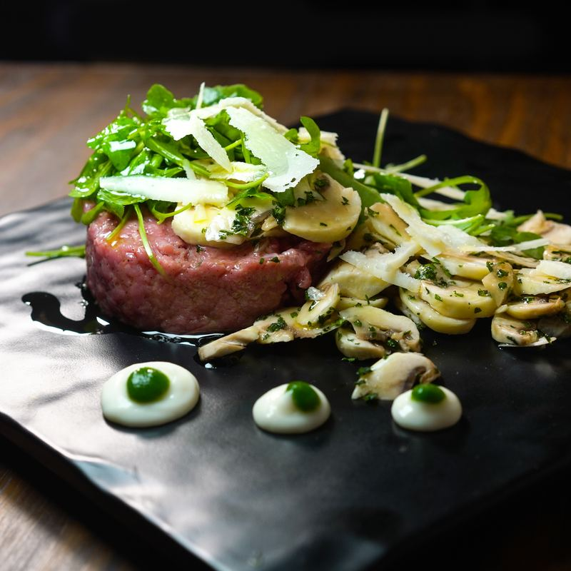
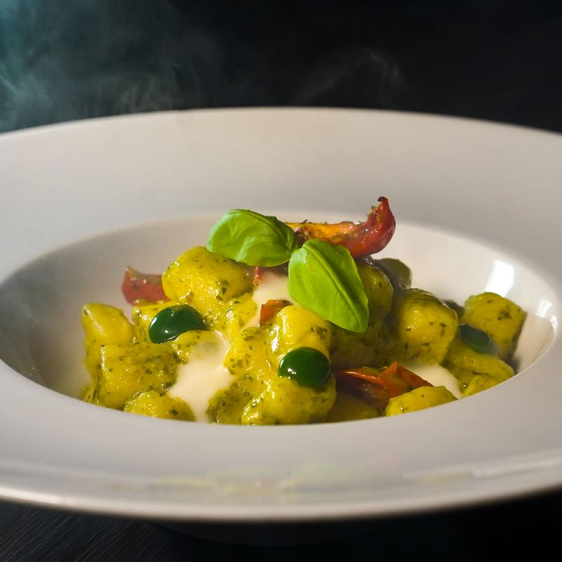
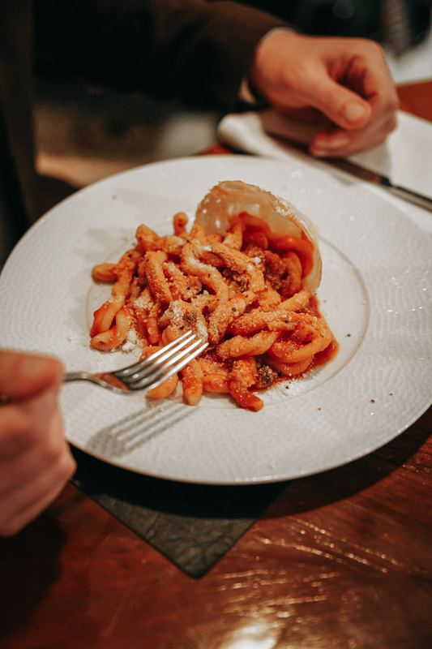
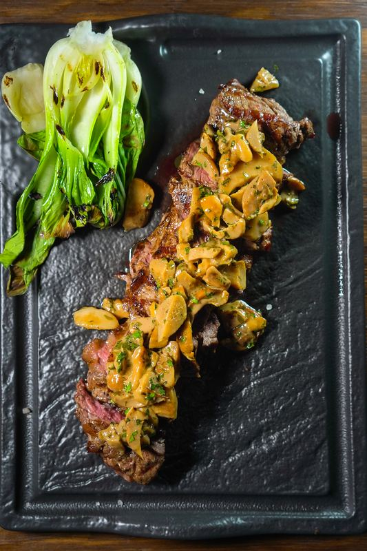
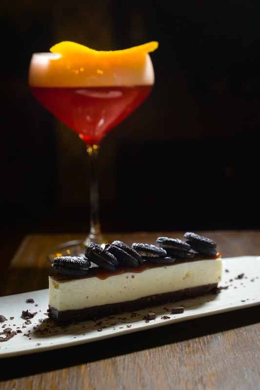
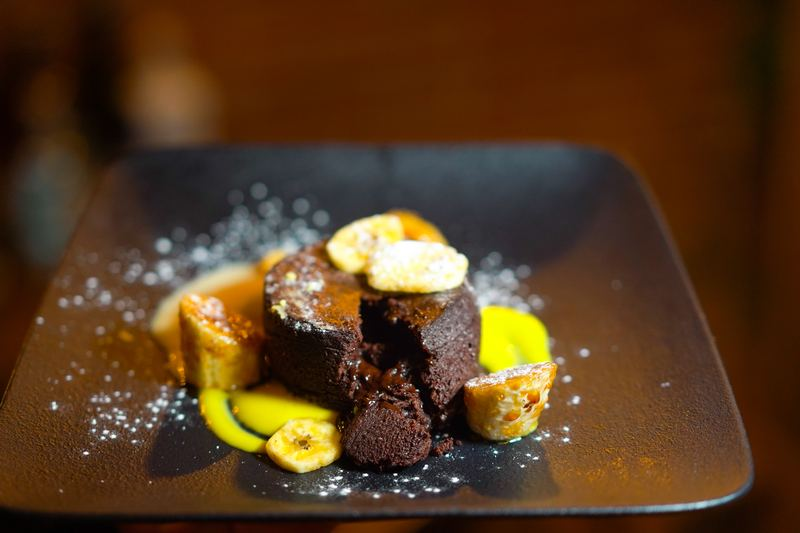

2 di 3 · La cena · Una cena
Il
Salotto
Stasera mi va di sedermi a tavola e mangiare bene.
Il Salotto è l'anima della casa: la cucina di famiglia, la tradizione romana e i nostri burger, da gustare con calma, seduti a tavola.
“In amore e in cucina, ciò che è fatto troppo in fretta è fatto male.”



Tradizione
Primi romani
Matriciana in cornucopia, fettuccine al ragù di cinghiale.
Fatti in casa
Burger
Otto burger con patatine fritte, anche vegetariani.
Per finire
Dolci
Tiramisù, Tarte Tatin, crema Maria Luisa.




La cena
Tradizione romana e nuove idee. Tutti i burger con patatine fritte.
Caricamento del menu…
Prezzi in euro · i numeri sono gli allergeni, elenco completo nella pagina Menu · piatti vegani, vegetariani e senza glutine su richiesta
Ti va una cena?
Prenota il tavolo: dentro o fuori, nel patio.